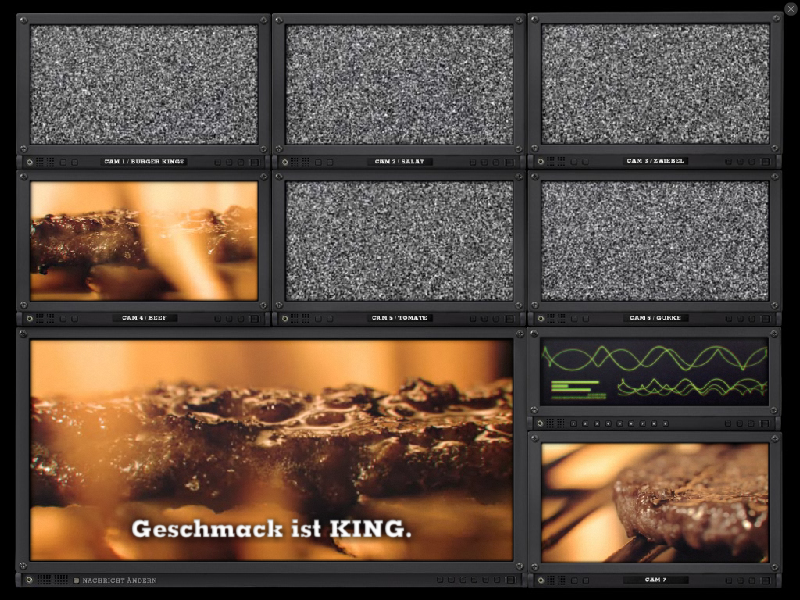
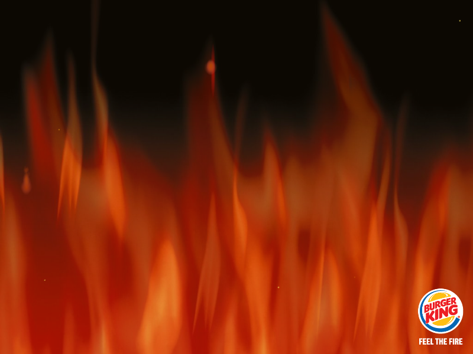
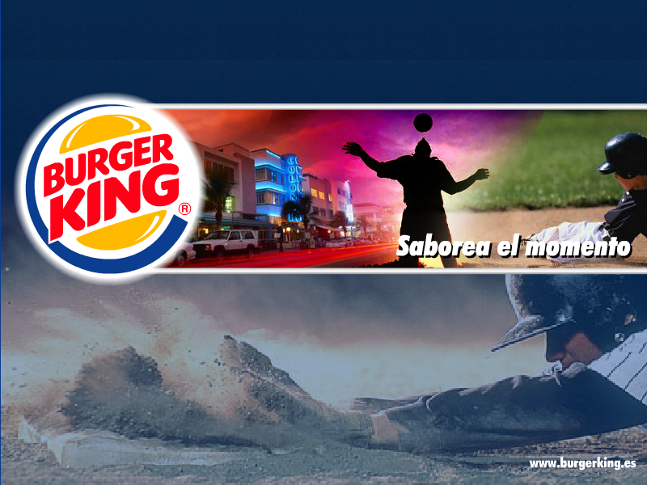

Burger King Screensavers
burgerking.de
Burger Monolog

DOWNLOAD
.exe file zipped (23 MB)
Feel the Fire

DOWNLOAD
.exe file zipped (Windows) (514 KB)
.sit file (Mac OS X) (1 MB)
Whopper
DOWNLOAD
.exe file zipped (2.03 MB)
burgerking.es
Fire
DOWNLOAD
.exe file zipped (698 KB)
Murales

DOWNLOAD
.exe file zipped (695 KB)

 .exe file zipped (23 MB).exe file zipped (Windows) (514 KB).sit file (Mac OS X) (1 MB)
.exe file zipped (23 MB).exe file zipped (Windows) (514 KB).sit file (Mac OS X) (1 MB) .exe file zipped (2.03 MB)
.exe file zipped (2.03 MB) .exe file zipped (698 KB).exe file zipped (695 KB)
.exe file zipped (698 KB).exe file zipped (695 KB)